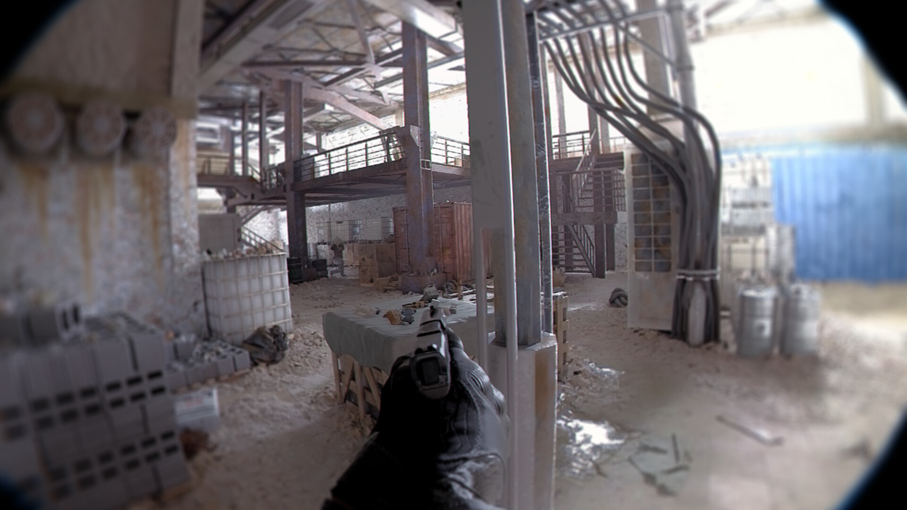

Introduction
Unreal Engine, développé par Epic Games, est l'un des moteurs de jeu les plus populaires et puissants du marché. Cette veille informationnelle se concentre sur les dernières tendances, mises à jour et développements concernant Unreal Engine.
Pourquoi cette veille?
Unreal Engine est un moteur extrêmement puissant sur lequel de nombreux jeux que j'apprécie on été développés (Satisfactory, Octopath Traveler, la Trilogie Borderlands, Lords of the Fallen...) de nombreux jeux sont égalements en développement sur Unreal Engine, le plus connu étant certainement The Witcher 4.
En somme, Unreal Engine s'impose en tant que pillier du jeu vidéo, ce qui me donne envie de me tenir a jour afin de voir ce a quoi les futurs jeux vidéo pouront ressembler.
Mises à Jour et Versions
Unreal Engine 5
Unreal Engine 5 a été annoncé le 13 Mai 2020 et a suscité un grand intérêt dans l'industrie. Sa version early-access a été rendue disponible en mai 2021, offrant des améliorations significatives en termes de graphismes, d'éclairage dynamique, et d'outils de développement. Finalement Unreal Engine 5 a été rendu disponible le 5 Avril 2022.
Les nouvelles fonctionnalités telles que Nanite (détails géométriques complexes et importation d'assets photoréalistes), Lumen (éclairage global dynamique et création automatique de la lightmap), Niagara(Physique des particules) et Chaos(Physique des objets) font d'Unreal Engine l'un des moteurs de jeu les plus complets.
Unreal 5.1
La mise a jour 5.1 du 15 Novembre 2022 a permit d'améliorer les outils déja présents dans le logiciel, comme une mise a jour de Lumen et de nombreus ajouts de QoL (Quality of Life), pour en savoir plus cliquez
ici
Unreal 5.2
La mise a jour 5.2 du 11 Mai 2023 a ajouté un logiciel de génération procédurale, Substrate, un addon permettant de rajouter automatiquement des textures sur un objet, ainsi que de nombreuses améliorations des outils deja présents, pour en savoir plus cliquez
ici
Unreal 5.3
La mise a jour 5.3 du 6 Septembre 2023 est la version actuelle d'Unreal Engine cette version améliore encore les fonctionnalités de base du moteur, cette mise a jour a deux focus principaux : des améliorations des systemes cinématiques, ainsi que de nouveaux systèmes pour la créations de corps et de vêtements, pour en savoir plus cliquez
ici
Mises à Jour Mineures sur Unreal 4
Des mises à jour mineures ont continué d'améliorer Unreal Engine 4, la version précédente. Ces mises à jour ont introduit des corrections de bugs, des améliorations de performance et de nouvelles fonctionnalités pour soutenir les développeurs dans leurs projets en cours.
Utilisations Diverses
Cinéma et Télévision
Unreal Engine gagne du terrain dans l'industrie cinématographique et télévisuelle en raison de sa capacité à produire des environnements virtuels réalistes. Des productions majeures, y compris certaines diffusions en direct, utilisent Unreal Engine pour créer des décors virtuels et des effets visuels impressionnants.
Architecture et Design
L'utilisation d'Unreal Engine dans le domaine de l'architecture et du design continue de croître. Les professionnels exploitent la puissance du moteur pour créer des visualisations architecturales interactives et réalistes.
Formation et Simulations
Unreal Engine est de plus en plus utilisé pour la création de simulateurs et d'environnements de formation virtuels. Les avantages incluent la possibilité de simuler des scénarios réels, offrant une expérience d'apprentissage immersive.
Communauté et Ressources
La communauté Unreal Engine reste active et engagée. Des tutoriels, des forums et des ressources en ligne continuent d'être largement disponibles, soutenant les développeurs de tous niveaux. Epic Games organise régulièrement des événements, des hackathons et des formations pour encourager l'innovation et l'apprentissage continu.
Cependant de nombreux avis vont dans le sens que la documentation de base du moteur est insuffisante par rapport au nombre de fonctionalités.
Exemples de la puissance de Unreal Engine
Diablo 2 Remake
Diablo II Remake demo
Grace a Unreal Engine l'artiste 3D Michal Wawruch a pu recréer une partie du jeu Diablo 2 en 4k, utilisant les technologies Nanite et Lumen pour faire de ce jeu de 2000 un jeu qui pourait être sorti aujourd'hui.
Cela montre bien la puissance de Unreal Engine qui a permit a un fan de créer une démo simple du jeu, le tout en ayant une qualité graphique folle.
Unrecord
Unrecord
Unrecord est un excellent exemple de la puissance du moteur et des possibilités qu'il ouvre, développé par la team DRAMA, le jeu a choqué Internet lors de sa première anonce en Avril 2023 de par son photoréalisme impressionnant
le jeu a même été accusé de fake, car bien trop réaliste, ceci a été démenti par l'un des développeurs qui a montré des images des environnements a l'interieur d'Unreal Engine, ainsi que du gameplay, le jeu est toujours en dévellopement
mais fait preuve d'une attention particulière au vu de sa qualité graphique.

Les (gros) problèmes de performance du moteur et des jeux
Remnant II
Remnant II
Malgré des graphismes époustouflants, le jeu Remant II a souffert à ca sortie en juillet 2023 de gros problèmes de performances, étant le troisième jeu a faire usage de Nanite, on voit qu'il était impossible de faire tourner le jeu en 4K et ce même avec ce qu'il se fait de mieux en terme de carte graphique (Nvidia GeForce RTX 4090),
Le moteur UE5 a beau permettre des prouesses visuelles l'optimisation des jeux produits sur celui ci n'est pas au point.
ARK: Survival Ascended
ARK:Survival Ascended
Les problèmes d'optimisation de Remnant II n'etaient pas uniquement du au fait que le moteur etait récent, car 6 mois après la sortie de Remnant II, ARK:SA, le successeur de ARK premier du nom, souffre lui aussi d'énormes problèmes de performance qui ne sont toujours pas entièrement corrigés .
Les développeurs sur Unreal Engine ont encore du chemin a faire avant que les jeux UE soit jouables a leur sortie.
D'ou viennent les problèmes?
Reddit
Selon de nombreux utilisateurs de Reddit, les problèmes de performance sont majoritairement du a deux raisons:
-1 De nouvelles fonctions trop régulièrement et trop nombreuses, les développeurs n'ont pas le temps de s'habituer aux nouveaux outils, ce qui peut engendrer du code ou des mesh non optimisés.
-2 Une documentation quasi inexistante, la documentation officielle de Unreal Engine n'est pas assez fournie par rapport a la taille du logiciel, il faut donc s'en remettre a Internet, ce qui prend beaucoup de temps et n'est pas toujours fiable.
Conclusion
Unreal Engine continue de dominer l'industrie du développement de jeux et d'étendre son influence dans d'autres domaines tels que le cinéma, l'architecture et la formation virtuelle. Les mises à jour récentes, en particulier Unreal Engine 5.3, promettent des avancées significatives en matière de qualité visuelle et d'efficacité de développement.
Cependant, malgré ses capacités graphique novatrices et époustouflantes, les jeux développés sur Unreal Engine 5 sont souvent très mal optimisés a leur sortie, a un point que même des PC de dernière génération sont incapables de les faire tourner de manière stable.
En somme, malgré de nombreuses prouesses graphiques et dans les moteurs physiques, Unreal Engine se doit encore d'améliorer ses performances internes (le moteur en lui même est très lourd et demande énormément de ressources) et d'améliorer sa documentation, afin que les développeurs puissent mieux comprendre l'outil et passent plus de temps a optimiser leurs jeux.